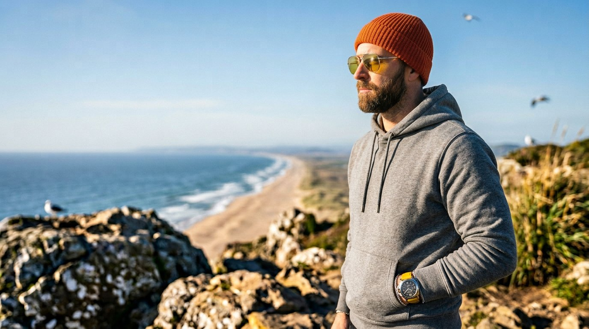
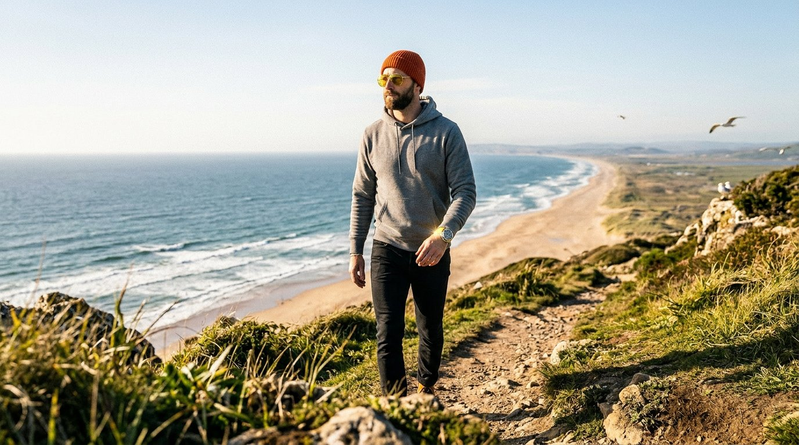
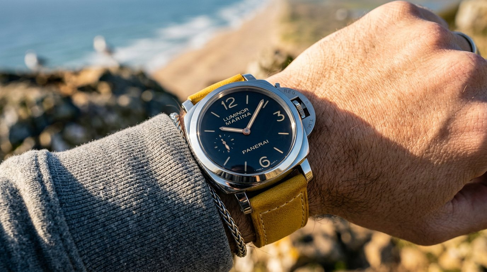
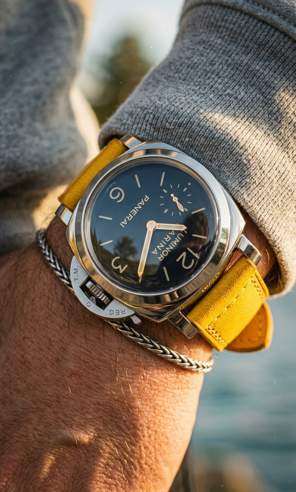

03 — Case Study
Panerai Luminor Marina
Open Water.
Luxury Watch · Lifestyle Campaign · AI Direction · 2025
Panerai doesn't need an introduction. The Luminor Marina has been worn by navy divers and design obsessives for decades — the case is bold enough to clear a room, the movement precise enough to trust your life to. The question isn't what the watch is. It's where it belongs.
The brief was to find that location. Not a studio. Not a velvet box. Somewhere the watch earns its keep — where the yellow strap reads as intention, not accident, and the stainless dial catches something real. A windswept Atlantic coast in late autumn. Golden light coming in at a low angle. A character who doesn't need to prove anything.



Navy dial against yellow strap against grey knit sleeve. The silver chain bracelet stacked under — it gives the eye somewhere to land that isn't the brand name, which lets the brand name hit harder when you finally read it.
The crown guard detail, the sub-seconds register at 9 o'clock, the applied indices catching the raking coastal light. None of this needed a studio.
CSG PRO · Layer 4 — Lighting

"A luxury object earns its close-up
only after you've earned the wider frame.
The watch is the last thing you notice —
and the only thing you remember."